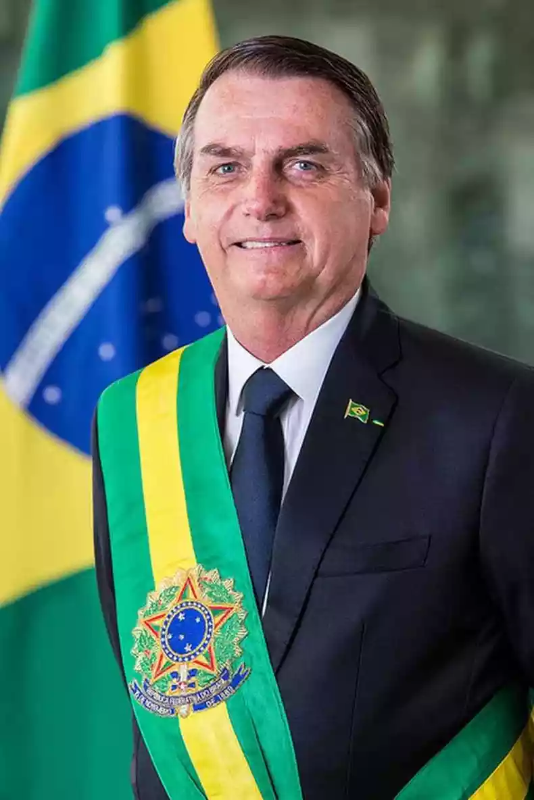

Candidato Luiz Inácio Lula da Silva

Aos sete anos de idade, Luiz Inácio Lula da Silva mudou-se com a família para Santos (SP), para escapar da miséria do sertão de Pernambuco. Quatro anos mais tarde, em 1956, foi para a capital do Estado de São Paulo. Lá, ainda criança, trabalhou como vendedor ambulante, engraxate e office-boy. Aos 15 anos, tornou-se aprendiz de torneiro mecânico. Em 1970, depois de perder a esposa grávida do primeiro filho, Lula passou a se dedicar intensamente à atividade sindical. Em 1973, casou-se com Marisa, sua atual mulher. Em 1975, chegou à presidência do Sindicato dos Metalúrgicos de São Bernardo do Campo e Diadema. Liderou a primeira greve de operários do ABC paulista em 1978, durante o regime militar. Em 1980, aliou-se a intelectuais e a outros líderes sindicais, para fundar o PT (Partido dos Trabalhadores), do qual se tornou presidente. No ano seguinte, liderou nova greve de metalúrgicos, foi preso e teve seu mandato sindical cassado. Participou da fundação da CUT (Central Única dos Trabalhadores) e, em junho de 1983, integrou a frente suprapartidária pró-eleições diretas para a presidência da República com os governadores de São Paulo, Franco Montoro (PMDB), e do Rio de Janeiro, Leonel Brizola (PDT). Lula foi eleito, em 1986, deputado federal constituinte com a maior votação do país. Concorreu à presidência da República em 1989, quando foi derrotado no segundo turno por Fernando Collor de Mello, e em 1994 e 1998, quando perdeu para Fernando Henrique Cardoso. Em 1995, deixou a presidência do PT e tornou-se presidente de honra do partido. Em 2002, foi eleito presidente do Brasil com votação recorde de 50 milhões de votos. Reelegeu-se em 2006, vencendo, em segundo turno, o candidato do Partido da Social Democracia Brasileira (PSDB), Geraldo Alckmin. Na presidência, a gestão de Lula tem seguido a política econômica de seu antecessor, conseguindo com isso colocar o país no rumo do desenvolvimento econômico. Lula também tem surpreendido os observadores da cena política por conseguir manter altos índices de aprovação e popularidade, descolando-se das denúncias de corrupção que atingiram seus auxiliares mais próximos ainda no primeiro mandato. Os institutos de sondagens eleitorais divulgam novas rodadas de suas pesquisas para presidente a partir desta segunda-feira, 10. As empresas Ipec, Quaest, Ipespe e Datafolha têm lançamentos marcados para esta semana, além de PoderData, Futura, Gerp e Paraná Pesquisas. O intuito dos levantamentos é projetar a preferência dos eleitores entre Luiz Inácio Lula da Silva (PT) e Jair Bolsonaro (PL) no segundo turno, marcado para o dia 30 de outubro. Também haverá pesquisas para o governo de São Paulo, onde o segundo turno é disputado entre os candidatos Tarcísio de Freitas (Republicanos) e Fernando Haddad (PT). Os institutos de sondagens eleitorais divulgam novas rodadas de suas pesquisas para presidente a partir desta segunda-feira, 10. As empresas Ipec, Quaest, Ipespe e Datafolha têm lançamentos marcados para esta semana, além de PoderData, Futura, Gerp e Paraná Pesquisas. O intuito dos levantamentos é projetar a preferência dos eleitores entre Luiz Inácio Lula da Silva (PT) e Jair Bolsonaro (PL) no segundo turno, marcado para o dia 30 de outubro. Também haverá pesquisas para o governo de São Paulo, onde o segundo turno é disputado entre os candidatos Tarcísio de Freitas (Republicanos) e Fernando Haddad (PT). Os institutos de sondagens eleitorais divulgam novas rodadas de suas pesquisas para presidente a partir
Candidato Bolsonaro
Jair Bolsonaro foi eleito em outubro de 2018 presidente da República com 57.797.847 dos votos, 55,13% do eleitorado brasileiro, pela Coligação Brasil Acima de Tudo, Deus Acima de Todos (PSL/PRTB). Sua carreira política começou em 1988, quando concorreu à Câmara Municipal do Rio de Janeiro e conseguiu uma vaga no Legislativo da cidade. Em 1990, dois anos depois de eleito, conquistou o primeiro dos sete mandatos consecutivos no cargo de deputado federal pelo Rio de Janeiro. Em 2014, foi o mais votado no Rio de Janeiro na disputa pela Câmara Federal, com 464.565 votos - conforme dados do Tribunal Superior Eleitoral (TSE). Em seus mandatos parlamentares, destacou-se especialmente pela defesa dos direitos dos militares ativos, inativos e pensionistas. Em sua carreira política, defendeu a redução da maioridade penal, o direito à legítima defesa e a posse de arma de fogo para cidadãos sem antecedentes criminais. Também atuou em favor de medidas para garantir a segurança jurídica das ações policiais. É o idealizador de uma proposta para tornar obrigatório o voto impresso no Brasil, medida que ele acredita que contribuirá para a realização de eleições mais confiáveis e passíveis de auditagem. Além disso, destacou-se na defesa dos valores cristãos e da família. Família Nascido em Campinas (SP), em 21 de março de 1955, Jair Bolsonaro é descendente de imigrantes italianos, que chegaram ao Brasil depois da Segunda Guerra Mundial. Filho de Percy Geraldo Bolsonaro e de Olinda Bonturi Bolsonaro, Jair é casado com Michelle, com quem teve sua filha caçula, chamada Laura. Jair Bolsonaro é pai de cinco filhos. Flávio, Carlos e Eduardo, que foram, respectivamente, eleitos como senador pelo estado do Rio de Janeiro; vereador do município do Rio de Janeiro e deputado federal pelo estado de São Paulo, este último conquistando o segundo mandato com a maior votação do País – 1,8 milhão de votos, recorde para uma disputa à Câmara Federal. É pai também de Renan e Laura. Síntese Jair Messias Bolsonaro Nascimento: 21/3/1955 Naturalidade: Campinas, SP Profissões: Militar Filiação: Percy Geraldo Bolsonaro e Olinda Bonturi Bolsonaro Escolaridade: Superior Mandatos Vereador, Rio de Janeiro/RJ, Partido: PDC, Período: 1989 a 1991. Câmara dos Deputados: Deputado Federal (Congresso Revisor), 1991-1995, RJ, PDC. Posse: 01/02/1991; Deputado Federal, 1995-1999, RJ, PPR. Posse: 01/02/1995; Deputado Federal, 1999-2003, RJ, PPB. Posse: 01/02/1999; Deputado Federal, 2003-2007, RJ, PPB. Posse: 01/02/2003; Deputado Federal, 2007-2011, RJ, PP. Posse: 01/02/2007; Deputado Federal, 2011-2015, RJ, PP. Posse: 01/02/2011; Deputado Federal, 2015-2019, RJ, PP. Posse: 01/02/2015. Filiações Partidárias PDC, 1989-1993; PP, 1993; PPR, 1993-1995; PPB, 1995-2003; PTB, 2003-2005; PFL, 2005; PP, 2005-2016; PSC, 2016-2018; PSL, desde 2018. Atividades Profissionais e Cargos Públicos Capitão do Exército Brasileiro, Nioaque (MS), entre 1979-1981. Estudos e Cursos Diversos Formação de Oficiais, Academia Militar das Agulhas Negras (AMAN), Resende, RJ, 1977; Paraquedismo Militar, Brigada Paraquedista, Rio de Janeiro, RJ, 1977; Educação Física, Escola de Educação Física do Exército, Rio de Janeiro, RJ; Mestre em Saltos, Brigada Paraquedista, Rio de Janeiro, RJ, 1983; Mergulho Autônomo, Corpo de Bombeiros, Rio de Janeiro, RJ, 1985; Aperfeiçoamento de Oficiais, ESAO, Rio de Janeiro, RJ, 1987.